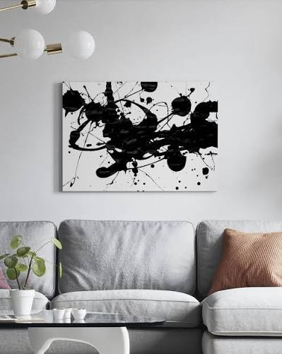
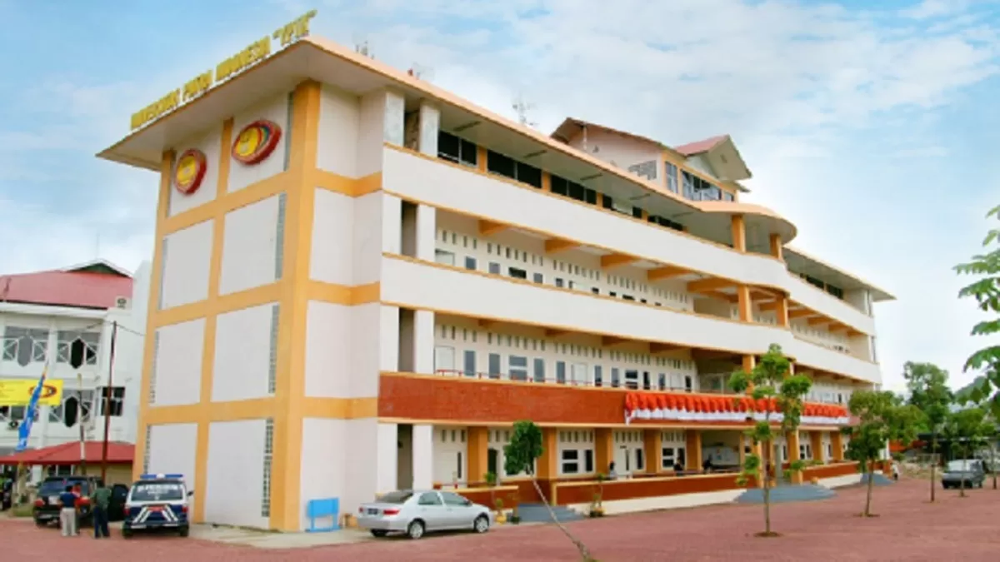

Andri Wiza Novian
Odoo Developer
Disiplin dan kerja keras merupakan hal yang selalu saya lakukan dalam setiap pekerjaan serta bisa menghasilkan atau memberikan hal yang lebih dari biasanya adalah nilai plus bagi saya sendiri.

About Me
Berpengalaman bertahun-tahun dalam pengembangan sistem ERP menggunakan Odoo, mulai dari versi 13 hingga versi 19. Memiliki keahlian mendalam dalam kustomisasi backend Python, integrasi API, manajemen database, hingga konfigurasi server Ubuntu.
01. Profesionalisme
Komitmen tinggi terhadap ketepatan alur bisnis perusahaan dan efisiensi sistem.
02. Solusi Teknis
Menyelesaikan berbagai tantangan bug, maintenance harian, hingga kustomisasi modul kompleks.
Keahlian & Teknologi
Deretan teknologi dan kerangka kerja yang dikuasai untuk mendukung pembangunan sistem kustom yang handal dan skalabel.
Pengalaman Kerja
Technical Odoo ERP
PT. Ambrosius Utama 2025 - Sekarang- Mempelajari flow bisnis yang sedang berjalan dan membantu user dalam implementasi flow ke Odoo sesuai kebutuhan perusahaan.
- Kustomisasi Odoo lewat frontend sesuai requirement perusahaan.
- Maintenance harian dan penyelesaian masalah/bugs di Odoo.
Technical Odoo ERP
Wujud Unggul (Sidoarjo) 2023 - 2025- Mempelajari flow sistem yang sedang berjalan dan merancang flow baru sesuai kebutuhan perusahaan.
- Kustomisasi modul Odoo sesuai requirement perusahaan dan pembuatan modul baru.
- Integrasi antar sistem internal dan eksternal (Contact Mekari) via API.
- Maintenance database (vacuum, reindexing), set domain, SSL Odoo, serta controlling server Ubuntu Odoo.
- Update dan release modul menggunakan Git.
Technical Odoo ERP
Sanqua Multi Internasional (Jakarta) 2022 - 2023- Mempelajari flow sistem yang sedang berjalan dan merancang flow baru.
- Kustomisasi modul Odoo, pembuatan modul baru, dan integrasi dengan sistem internal via API.
Technical Odoo ERP
Kalbis Institute (Jakarta) 2021 - 2022- Mempelajari flow sistem dan merancang flow baru sesuai kebutuhan.
- Kustomisasi modul Odoo, pembuatan modul baru, dan integrasi via API.
IT Support
PT. Guhring Indonesia (Bekasi) 2020- Melakukan pemeliharaan dan instalasi alat komputer perusahaan.
Functional Odoo & Website Developer
CV. Praha Siber Mandiri (Padang) 2019 - 2020- Merancang dan membangun website (Backend & Frontend).
- Mempelajari, memahami konsep ERP, dan melakukan implementasi (instalasi & implementor).
Online Reporter
KOMINFO (Kota Solok) 2017 - 2019- Membuat berita untuk publikasi website resmi KOMINFO Kota Solok.

Pendidikan
S1 Sistem Informasi
Universitas Putra Indonesia YPTK Padang
2010 - 2014 • IPK: 3.18
My Contact
Tertarik untuk berkolaborasi dalam pengembangan sistem ERP atau proyek kustomisasi Odoo? Hubungi saya melalui tautan di bawah ini.